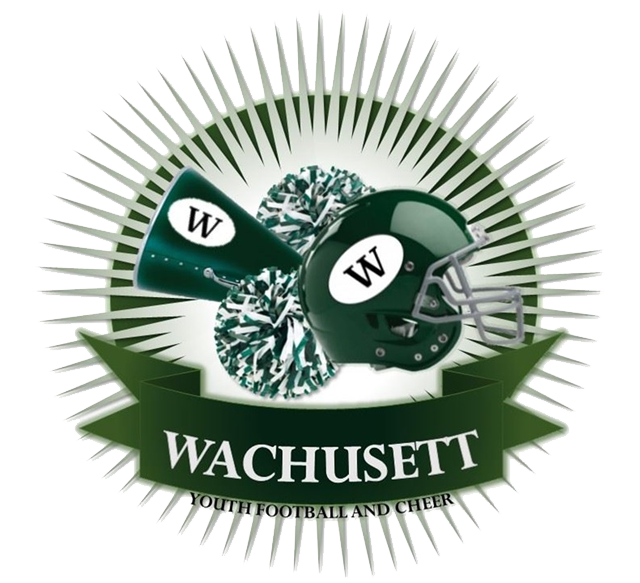

This week
Every team's next game. Sample data below except 11U.


Welcome to ASL Bengals Football & Cheer!
The ASL Bengals proudly represent the athletes of Ayer, Shirley, and Lunenburg, building upon decades of tradition and excellence both on and off the field. Now in our fourth season as the ASL Bengals, we've firmly re-established ourselves as championship contenders in Central Mass Youth Football and Cheer.
With a commitment to growth, development, and safety, we continue to invest in equipment that meets the latest safety standards, ensuring our athletes have the best tools to succeed.
We are competitive, community-driven, and built for champions. #WeAreBengalsNation
Programs
From your athlete's very first snap to competitive tackle football and cheer.

Tackle Football
Full-contact competitive football against other Central Mass towns -- teamwork, leadership, and discipline, on top of the game itself.
- Certified helmet & shoulder pads provided
- 8 regular season games + playoffs
- Reversible jersey included

Flex Football
Designed by NFL players to replicate their practice regimen -- technique and game understanding in a limited-contact environment, and a natural step toward tackle.
- No tackling -- blocking & pass rush only
- Helmet, pads, flags & jersey provided
- Two teams: 6U and 8U

Cheer
Sideline and competition cheer -- physical skill, discipline, and teamwork on and off the mat, with real competition results to show for it.
- Sideline cheer at every home game
- 2–5 competitions per season
- Uniform & pompoms provided
Teams
Every division fielded this season.
Recent results
The last game played by each team.
#bengals nation
Community, spirit, and Friday nights under the lights.


Look Good. Play Good. Feel Good.
Safe.
Committed to equipment that meets the latest safety standards, with coaches trained in safety procedures.
Competitive.
Committed to fielding teams and squads that compete in their divisions, with coaches focused on a positive, safe, and fun environment.
Cohesive.
Committed to outfitting athletes in the same uniforms and up-to-date styles -- look good, feel good, play good.
Positive.
Committed to a positive, energized environment -- social media, music, announcing, and more, because it matters to a team's success.